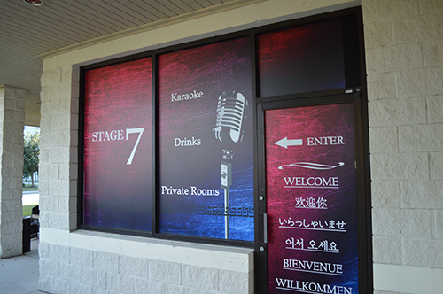

Chinese people love Karaoke. However, he wants his Karaoke club targeting mainly Americans.
He is Wei Fan, 25, a Chinese student majored in entrepreneurship, graduated with his MBA from the University of Florida last December, opened the first and only Karaoke bar, Stage 7, in Gainesville.
In China, the most popular entertaining way is singing in Karaoke places. Chinese students studying abroad want to have a place to relax that feels like home.
However, American cities are lacking in this entertainment. The ones that do exist host poor conditions and high prices.
“I want to change something,” he said.
Due to the language barrier and culture shock, Chinese students have a relatively narrow social circle, especially when they arrive in the United States.
“I want to create a place where Chinese students can have fun as they are at home and also provide a platform for them to socialize with their friends,” Fan said.
Now, his goal seems to be at least partially achieved.
When Chinese students want to take a rest and do karaoke, they think about going to Stage 7.
But it’s not only for the Chinese. Japanese and Koreans often go there. And the American attendance is rising.
While the business is growing, the beginning wasn’t easy.
Fan came up with this idea at the beginning of last year. From January to August, he did a marketing survey.
He researched whether Americans would be willing to spend money on karaoke; if they would, how much; whether Chinese and other Asian students would patronize a karaoke place in the town and how much money they would spend there.
He published those surveys online, gave random people questionnaires to fill in and did interviews with hundreds of strangers. He also went to cities where they have Karaoke clubs to observe such as San Diego, Los Angeles, Atlanta, Orlando and New York.
At the same time, his ideas soon caught Martin Elkins’ attention, who later became the co-owner of Stage 7.
Elkin, 25, graduated from the UF MBA program in May.
“Wei’s idea is very exciting to me,” he said. “It is a new concept here. It’s cool to start from zero and make every day better.”
Elkin started work at Stage 7 last April.
From August to December last year, Fan and Elkin began to put their ideas into practice: finding places, making contracts with lawyers and looking for architects and equipment suppliers.
Finally, they imported the newest and the most advanced karaoke equipment and system at that time from an exhibition in Hong Kong.
“It’s the best system at that time, compared to other karaoke places in the U.S., and even has more songs than the system used in mainland China,” Fan said.
At the end of 2012, Stage 7 opened but only partially. At that time, it only had two rooms without any decorations. No drinks were served. Admission was $8 per hour per person.
“Because it only had two rooms at that time, it seems to be popular and crowded.” Fan smiled.
In April this year, Stage 7 opened officially. It now has five rooms: one small, two medium, one large and one party room. Each room has its own colors and decorations. Different kinds of drinks are served.
Fan and Elkin divide their work.
Elkin takes care of the operation. During the open hours, he serves the customers, sells the drinks, sets up and cleans up the rooms and makes sure the place has enough inventory. Also, he takes care of investment and loans. Fan mainly focuses on the strategy.
Located at the corner of Sw 34th St. and 42nd Ave., Stage 7 now is getting more people’s attention in Gainesville under the effort of Fan and Elkin. Almost every Chinese student knows about it. And more Americans are willing to come.
In May, the graduation ceremony season, students held their graduation celebration party on Stage 7. Each day, at least one of the five rooms had a graduation party during that period.
Although the business is growing, it is still a hard time for Fan and his partner. The business is not yet profitable.
This is not what Fan expected at first.
“After I did the marketing survey, I gave the result to my professor,” Fan said. “He said I probably only can reach 50 percent of my prospective earnings. But now, only 20 percent has been achieved. And I was expecting to open the third karaoke place at this time of year according to the plan I made from the survey result.”
Although students like going to karaoke, they don’t have strong purchasing power. They usually don’t buy drinks, which are expensive and the main source of profit for club owners.
Another misconception was that profit would come mostly from Chinese.
“It seems that Chinese people are everywhere,” Fan said. “However, only 10 percent of UF students are Chinese. And it seems that Chinese people are wealthy, however, only 10 percent of them are really wealthy and are willing to spend money.
“Overall, Americans have stronger consumption power,” he said.
Because of this, Fan and his partners are changing their target customers to Americans. They are promoting Stage 7 in Gainesville through some charity activities, different advertisements and their own website.
“Another American is joining us to help us do the marketing job,” Fan said.
Probably, there is a deeper paradox beneath the surface.
For Chinese students, Stage 7 is not as good as karaoke places in China because the price is higher and the atmosphere is not the same. For Americans, it is not a part of their normal culture.
Wei Shi, 26, a visiting scholar from China says, “The place is just so-so. But thinking that it is in America, it is OK.”
Another Chinese student, Qianwen Zhang, who majored in multimedia journalism, said, “It is just not the same thing in China. We can’t enjoy ourselves to the full. I just found it is boring.”
Therefore, Fan and Elkin want to make an effort, changing Stage 7 to a place where American and Chinese both love it.
“I want to make this place popular and introduce and adapt karaoke concept into American culture,” Elkin said, “I hope it could be a mix of American and Asian culture. Asians may feel familiar but not the same in their home countries and Americans find it new and exciting but not totally strange. They can also find their tradition here.”
Fan said: “Making Stage 7 a chain brand in America is my goal.”